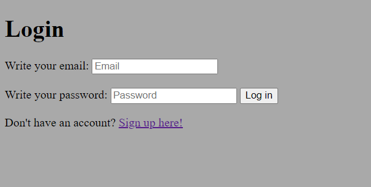
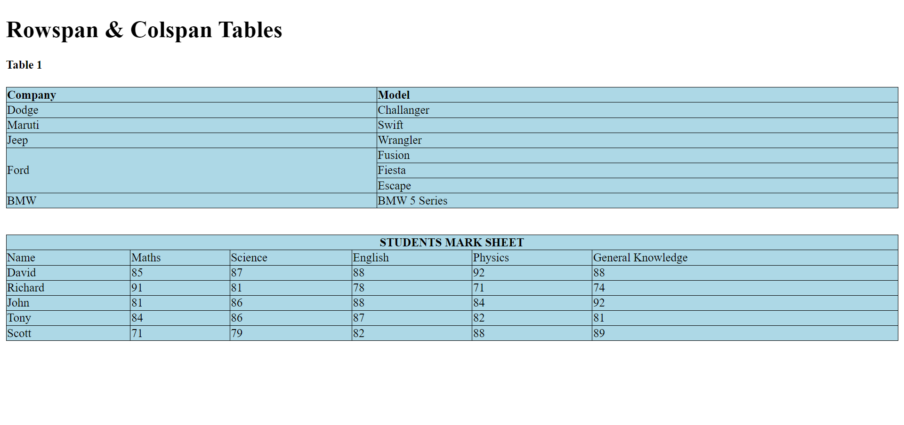
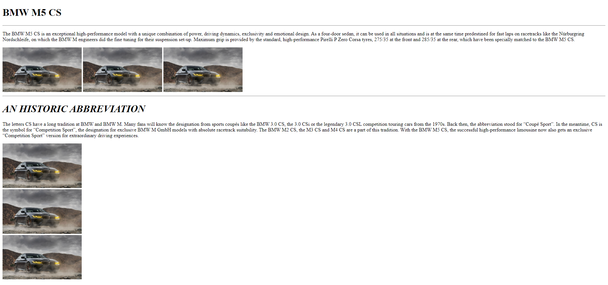
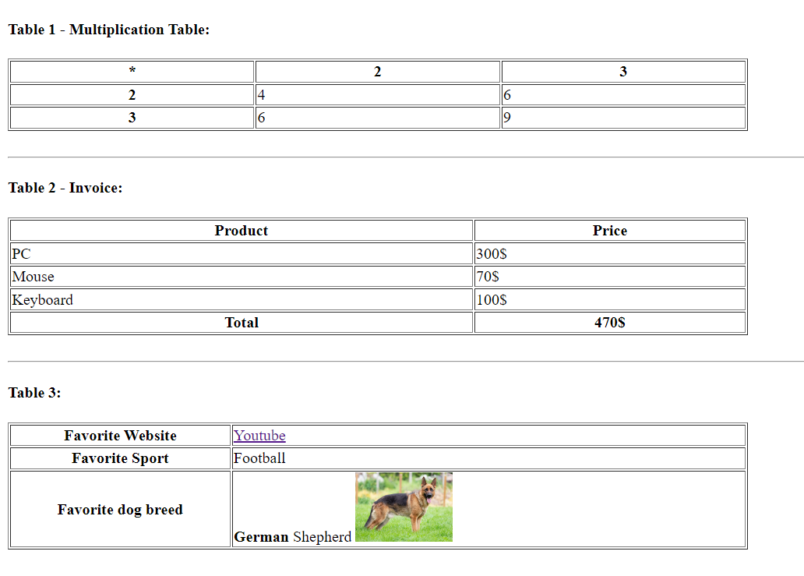
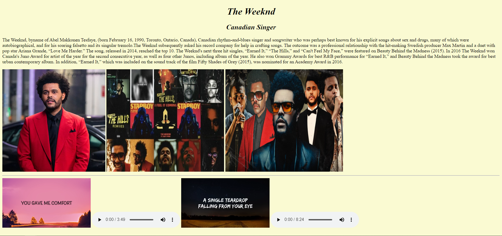
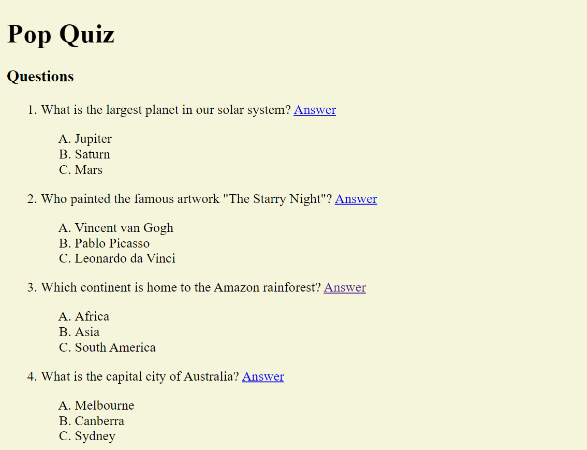
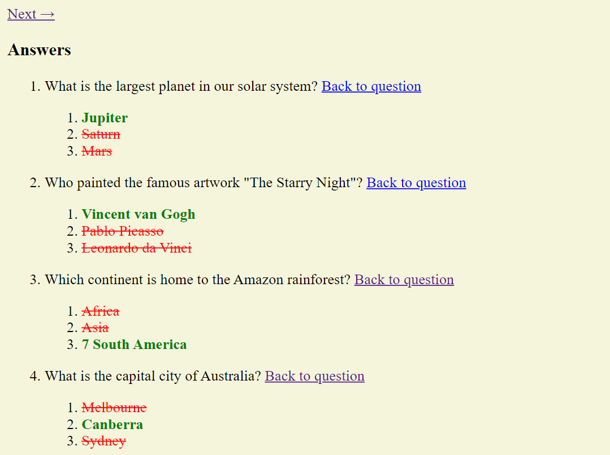

In this project we learned how to save pictures in a local folder and find them easier and use them in a better and optimised way!
In this project we learned how to create sign up and log in forms and I think this is one of the best features that we have learned.
Creating tables has never been easier using Html but this was a tricky one because we had to search for colspan and rowspan in Google and practice them but in the end it turned all good for us!
Who said to not mix work and fun sometimes... Being able to create a website with your dream car is always a great way to start the day, right?
This one was very simple and very great for us to understand how to put data inside tables and how to also put other files instead of text inside the tables, like multimedia etc.
Since we had homework about a favorite celebrity, I felt like obligation to make one website for the Weeknd since i have been listening to his songs repeatedly the past 2 weeks...
At first sight, this project may look very hard and of course it was one of the trickiest homework that we have done but in now we learned about nested lists and that is all that matters because next time its not even gonna look hard for us!
 